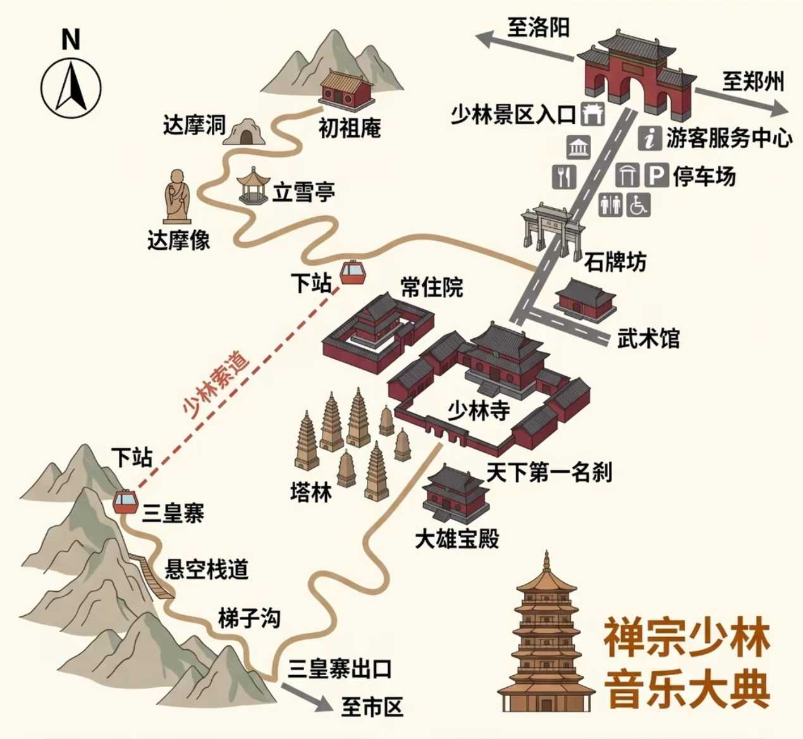
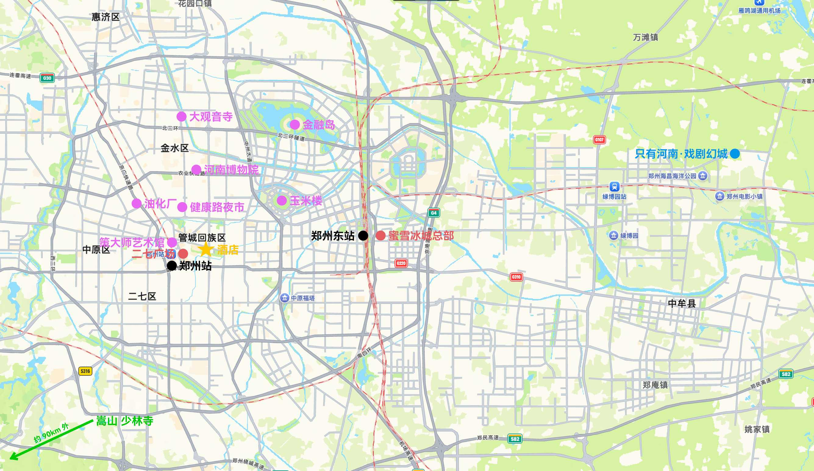

Day 1
🚄 火车 G3751
火车信息：
- 时间：13:49–15:25
- 地点：徐州东 → 郑州东
- 价格：165 元
🥤 蜜雪冰城总部
游玩时间：15:30–17:00
景点信息：
- 开放时间：08:00–23:00
- 门票：免费
🏨 美途酒店
地址：郑州二七广场大卫城店
🗼 二七广场 & 二七塔
游玩时间：16:00–18:00
景点信息：
- 开放时间：08:00–23:00
- 二七广场：全天
- 二七塔：09:00–17:00（16:30 停止入馆，周一闭馆）
- 门票：免费
备注：
- 郑州的市中心。二七塔则是其中的地标，为二七大罢工而建。
- 晚上灯光亮起的时候好看。
- 二七塔可在小程序「郑州二七纪念馆」预约。
🍴 郑州烤鸭店
用餐时间：18:00–19:30
餐厅信息：
- 营业时间：11:00–22:00
- 地址：人民路
备注：
- 似乎里面的烩面比合记烩面好吃，焖饼比葛记焖饼好吃，蒸饺比蔡记蒸饺好吃。
Day 2
🍴 刘相五胡辣汤
用餐时间：07:30–09:00
餐厅信息：
- 营业时间：04:00–13:30
- 地址：康复中街
备注：
- 旁边似乎有个黄焖鸡也好吃。
🚌 大巴
大巴信息：
- 时间：8:20–10:20
- 其他时间：7:40、9:00、10:00
- 地点：郑州中心站 → 少林寺
- 价格：30 元
备注：
- 购票平台：小程序「豫州行」。
🏯 嵩山 少林寺 ⭐️
游玩时间：09:00–17:00
景点信息：
- 开放时间：07:00–17:00
- 门票：
- 少室山：80 元/人（少林寺、塔林、武术表演）
- 太室山：50 元/人（嵩山）
- 少室山和太室山都去的话买 100 元/人的年卡可能更划算
- 少林索道：单程 70 元/人，往返 100 元/人
- 观光车：20 元/人
备注：
- 地图：
- 不爬山攻略：少林景区门口 → 游客服务中心 → 武术馆 → 常住院 → 塔林 → 原路返回 → 少林景区出 → 禅宗少林·音乐大典
- 爬山攻略：少林景区门口→ 常住院 → 塔林 → 少林索道 → 三皇寨 → 悬空栈道 → 梯子沟 → 三皇寨出口 → 禅宗少林·音乐大典（游览和爬山约 4.5 小时）
- 武术表演：
- 时间：10:30、11:30、14:00、15:00、16:00
- 提前 20 分钟占好位置
- 购票平台：小程序「漫游嵩山」

Day 3
🍴 方中山胡辣汤（总店）
用餐时间：07:30–09:00
餐厅信息：
- 营业时间：05:00–13:30
- 地址：紫荆山路
🎭 只有河南 · 戏剧幻城 ⭐️
游玩时间：10:00–20: 00
景点信息：
- 开放时间：10:00–20: 00
- 门票：一天 290 元，两天 490 元
🍴 小城外
用餐时间：17:00–19:00
餐厅信息：
- 营业时间：17:00–21:30
Day 4
🎨 策大师艺术馆
游玩时间：09:00–10:00
景点信息：
- 开放时间：10:30–20:00
- 门票：29 元
备注：
- 艺术展览，就在二七塔旁边
🚏 油化厂创意园
游玩时间：10:00–12:00（逛完大概 1.5–2 小时）
景点信息：
- 开放时间：全天
- 门票：免费
备注：
- 老厂房改造的文创园
🍴 黄河大鲤鱼
用餐时间：12:00–13:00
🏛️ 河南博物院 ⭐️
游玩时间：13:00–15:00
景点信息：
- 开放时间：09:00–17:00（周一闭馆）
- 门票：免费，需提前预约
备注：
- 重点看九大镇馆之宝
🏛️ 大观音寺
游玩时间：15:00–16:00（1–2 小时）
景点信息：
- 开放时间：08:00–17:00
- 门票：免费
🚏 金融岛
游玩时间：16:00–17:30
景点信息：
- 开放时间：全天
- 门票：免费
备注：
- 郑州版陆家嘴
- 最佳打卡时间是 15:00–17:00，光线柔和人也不多
🍴 风味羊肉烩面馆
用餐时间：17:00–19:00
餐厅信息：
- 营业时间：10:00–5:00
- 地址：金水路
Day 5
🚄 火车
火车信息：
- 时间：
- 地点：
- 价格：
附录
🚏 景点备选
玉米楼
健康路夜市
🍴 餐饮备选
烩面：
- 合记烩面
- 裕丰园烩面
- 四厂烩面
小吃：
- 葛记焖饼
- 蔡记蒸饺
奶茶：
- 眷茶
- 推荐：荆芥柠檬茶
